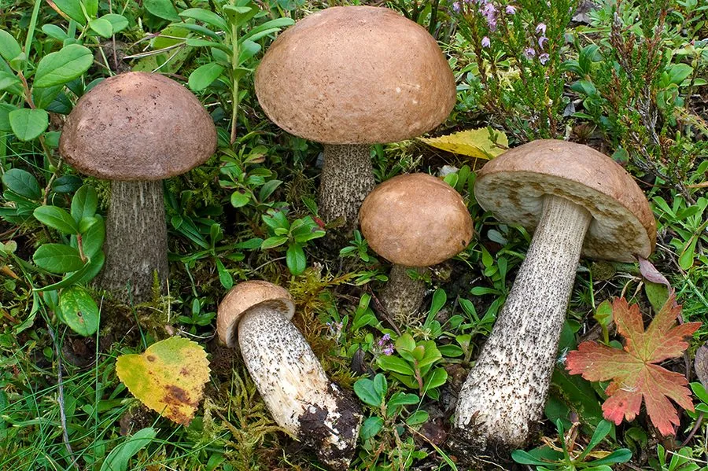

真菌 · 真菌界
褐疣柄牛肝菌 Leccinum scabrum

桦树林下常见的牛肝菌，菌盖褐色、菌柄布满黑色小鳞片，菌肉白色，是欧洲和北方林区常见的食用菌，必须熟食。
- 分类
- 门担子菌门纲伞菌纲目牛肝菌目科牛肝菌科属疣柄牛肝菌属
- 栖息环境
- 桦树林和针阔混交林的地面，与桦树形成外生菌根
- 地理分布
- 欧洲、北美和东亚，中国东北、华北和西南林区有分布
- 保护级别
- 暂无评估（IUCN 未评估，中国未列入重点保护名录）
物种志
褐疣柄牛肝菌是担子菌门牛肝菌目的外生菌根真菌，子实体单生或群生。菌盖呈半球形至平展，直径 5–15 cm，表面褐色至灰褐色，光滑而微黏；菌盖下面为细密菌管，幼时白色，成熟后变为灰褐色；菌柄细长，白色至淡灰褐色，表面密布黑色小疣状鳞片；孢子印橄榄褐色。
褐疣柄牛肝菌与桦树形成外生菌根，多生于桦树林、针阔混交林的地面，夏秋季出菇，在欧洲、北美和东亚广泛分布，中国东北、华北和西南林区有出产。它的菌肉白色、质地较软，味道鲜美，是北方林区常见的野生食用菌。牛肝菌必须充分加热后食用，生食可能引起肠胃不适，采摘时要与有毒菌类区分。
形态与习性
- 菌盖直径 5–15 cm，褐色至灰褐色
- 菌管幼时白色，成熟后灰褐色
- 菌柄细长，表面密布黑色小疣状鳞片
- 孢子印橄榄褐色
- 采收期夏秋季，桦树林下出菇
- 食用性可食，必须充分加热
趣味知识
- 褐疣柄牛肝菌的菌柄上布满黑色小疣，是它最明显的识别特征。
- 它与桦树形成外生菌根，因此多出现在桦树林下。
- 野生牛肝菌必须充分加热后食用，生食可能引起肠胃不适。